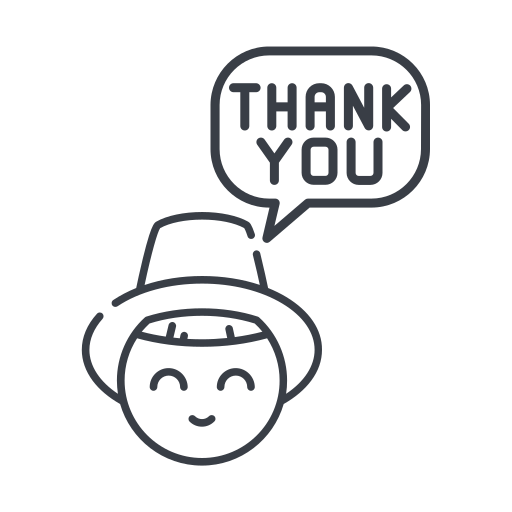

In A Nutshell
Pydroid is a Technical Education Institute which provide summer training to College students in (Programming, Web Development & Designing). While all lectures will be delivered offline Online Dashboard will be used for smooth functioning of the programme and keeping record of all the events and data that will happen during the 6 week of course.
Understanding the problem
What does targeted audience look like?
Do we need an Online Interface?
What features are required and are necessary?
How the dashboard will be used?
Features that user will need to use most frequently?
How much time they can/will spend on that dashboard?
Why will they visit the Dashboard?
If user is not on dashboard how will we notify if something important comes up?
Solution
What does targeted audience look like?
Well they are going to be technical college students from 1st year to final Year. And with their main focus in the field Computer Science
Do we need an Online Interface?
It may seem like the obvious one but this is important to get everyone on the same page or Table at least. Because we want to keep record of all the data, keep track of the performance of students, and want everything highly managed with minimal efforts. So yup we need it.
What features are required and are necessary?
We didn’t wanted to spend our time and resources providing a tons of functionality but the basic one so we stick with our objectives
- Student’s Profile
- Online assignments / Projects Submission
- Report Card
- Lecture Summary and Resources
- Notifications for upcoming classes
How the dashboard will be used?
As we are training students to be programmer, Developers and Designers they must have laptops with them as the part of the programme and they will need Dashboard to submit the assignments and projects. So we decided to make a web-Interface for Desktop only.
Features that user will need to use most frequently?
User will need to review the delivered lectures regular basically every day to check for additional resources and to master that particular topic. So estimate 70% users will use that regularly.
After that Assignment and project submission is mandatory so all users will need to use that feature.
Report Card section is also expected to be used heavily after assignment submission
Let’s see after collecting some data from first test Run
How much time they can/will spend on that dashboard?
A typical user will spend from 3 minute to 30 minutes on the Dashboard regularly.
Why will they visit the Dashboard?
Every user will need Dashboard for submitting Assignment and Projects.
But about 30% of users are estimated to use dashboard regularly for reviewing lectures and additional resources.
If user is not on dashboard how will we notify if something important comes up?
Critical situations are when a student is about to miss an assignment or project or if he/she is late. Then we can notify the user using Text massage or via email.
User Research (Phase 1)
This was an early phase research before we jumped into making something we wanted to get insight into the daily routine of different kinds of students in a classroom.
Research Goals
To establish Personas for different type of class students
To get an insight of their preferences
To understand how they spend their day and how much flexibility they can provide
User Persona
Nyaz Khan
B.tec 4th year
Male
Avg. Student
An Extrovert who likes to go out and meet different peoples, Spend most of his time on Trips and attending festivals etc. lives in hostel. Never attended any online course.
Use whatsapp and youtube as two prime application
Want to learn skills as it is necessary for getting a job and there is practically no time left
Nyaz Khan
B.tec 4th year
Male
Avg. Student
An Extrovert who likes to go out and meet different peoples, Spend most of his time on Trips and attending festivals etc. lives in hostel. Never attended any online course.
Use whatsapp and youtube as two prime application
Want to learn skills as it is necessary for getting a job and there is practically no time left
Jaipreet Singh
B.tech 3rd Year
Male
Intelligent Student
An Introvert like to play games watch movies etc. spend most of his time on laptop.
Regularly attends online courses and watch YouTube video lectures
Use whatsapp and Youtube as two prime application
Want to learn new skills to improve his knowledge
Bhawana Anand
B.tech 3rd year
Female
Avg. student
Likes to hang out with friends. Don’t use laptop regularly. Uses YouTube, Instagram, and whatsapp as three prime application
Want to learn some skills. And get certificate
Extration
Everyone is available on whatsapp 24X7
80% of students have not taken a fully online course yet
Only 30% are able to learn using online video tutorial and stuff
80% students own a laptop or PC
On the basics of above research we were ready to go after doing some minor changes to the Initial idea
Wireframe
After brainstorming for several hours and creating different variations of wireframes we decided to move forward with this

Information Architecture
Here’s a bird eye view i.e. information architecture of the idea that we formulated and worked on further

High Fedility Prototype
well you have scrolled all the way down here so let's have a look at High Fed protptype I created using HTML / CSS and Javascript.
View Live PrototypeSo what's next ?
Product is in development phase as of now and then Beta version will be relesed for our first batch of users so that we can futher test it in real enviroment insights will be used to improove dashboard integraion with classes furthermore.
